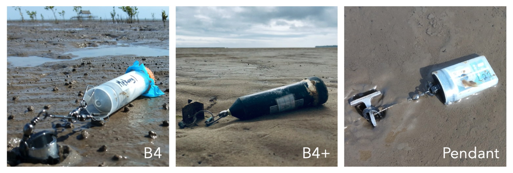
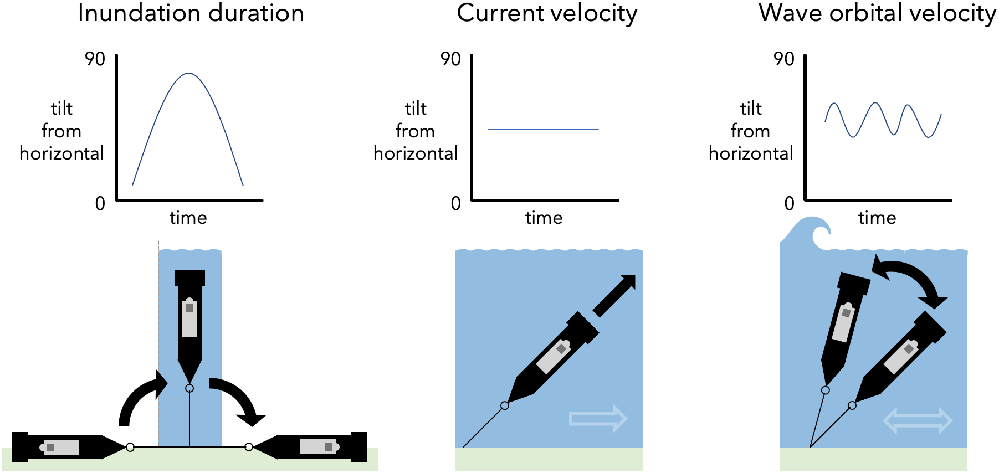
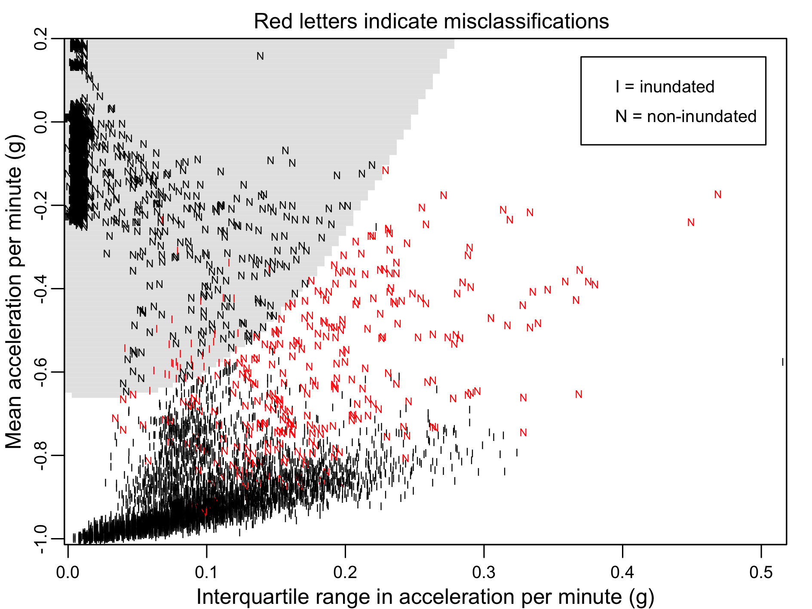
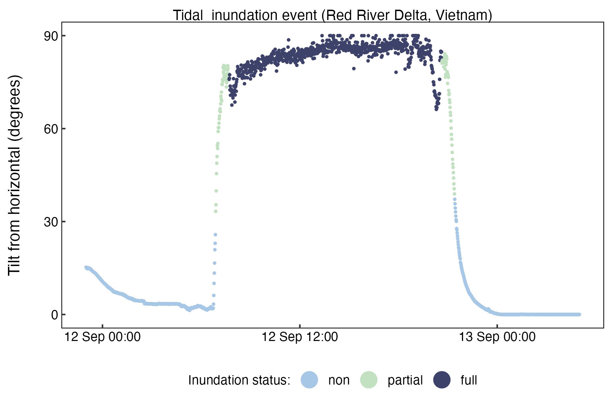
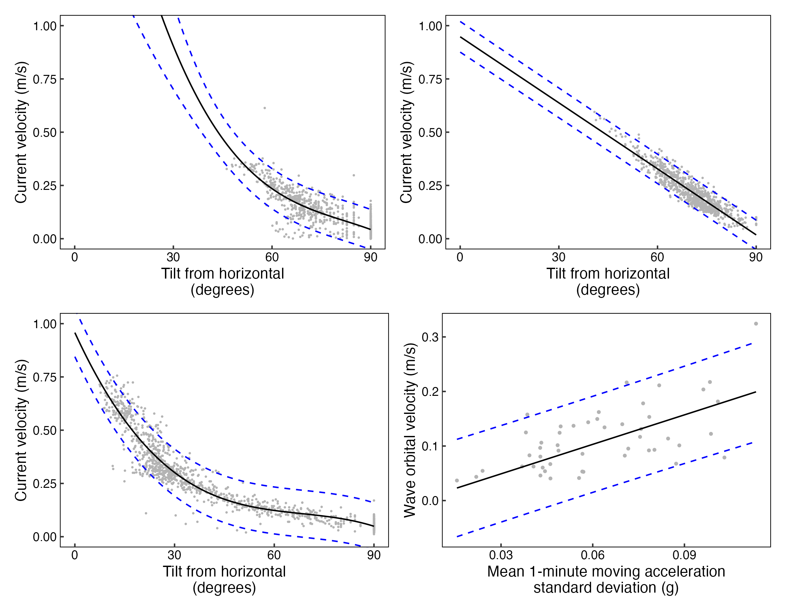

1 Introduction
There are presently three Mini Buoy designs featured in this handbook, each with their own strengths and limitations:
- B4 is the original Mini Buoy design featured in Balke et al. (2021) that contains an MSR145 B4 acceleration data logger inside a self-standing centrifuge tube attached to an anchor via a fishing swivel. The B4 measures inundation duration and current velocity only.
- B4+ is a more durable version of the original Mini Buoy ideal for long term deployments. The B4+ has a UV-resistant casing without the skirt and a metal eye bolt connected to a mooring by crimped fishing line rings. In addition to measuring inundation duration and current velocity, the B4+ has been calibrated to measure wave orbital velocities. Whilst the durability and functionality may be improved, the B4+ requires more effort to assemble.
- Pendant is an integrated accelerometer data logger, float, and anchor point, attached to a pole by a fishing swivel. The Pendant is less expensive and easier to assemble than the B4 and B4+, however memory capacity and sampling rates are lower. Because of the low sampling rate, the Pendant is unstable for measuring wave orbital velocity.

Once assembled, Mini Buoys can be used in single, comparative, or multiple deployments for purposes of habitat restoration potential mapping, flood risk monitoring, and citizen science engagement.
| B4 | B4+ | Pendant | |
|---|---|---|---|
| Cost | £430 | £430 | £120 |
| Total weight | 42.3 g | 60.0 g | 19.9 g |
| Sensing height above bed | 16 cm | 16 cm | 10.5 cm |
| Deployment duration | 1 sec: 25 days | 1 sec: 25 days | 10 sec: 7.5 days |
| Deployment duration | 5 sec: 125 days | 5 sec: 125 days | 1 min: 45 days |
| Deployment duration | 10 sec: 170 days | 10 sec: 170 days | 5 min: 225 days |
| Deployment duration | 1 min: 1.4 years | 1 min: 1.4 years* | 10 min: 1.2 years |
| Currents detection limit | 4.3 cm/s | 1.8 cm/s | 4.9 cm/s |
| Currents accuracy | ±18.9 cm/s | ±13.8 cm/s | ±2.20 cm/s |
| Waves detection range | - | 0.0 cm/s | - |
| Waves accuracy | - | ±17.8 cm/s | - |
| Configuration | Windows | Windows | Windows and macOS |
* will not measure wave orbital velocity in a reliable way
1.1 Operating principles
Inundation duration, current velocity, and wave orbital velocity parameters can all be derived from acceleration data.1 For an accelerometer mounted in a tethered float, the change in tilt from 0 to 90° indicates a change in the position of the device from lying horizontally on the tidal flat to floating vertically in the water column as the tide comes in. A return of the tilt to 0° indicates the tide has retreated and the Mini Buoy is once again lying flat. The time when the Mini Buoy deviated from the horizontal position gives the inundation duration of the tide. When the Mini Buoy is fully inundated, any tilting away from the vertical position is caused by a current pushing against the buoy. The stronger the current, the stronger the tilt. When waves pass over the Mini Buoy, they cause it to wobble. Moving standard deviation in the tilt over a sufficient time window captures the average wave orbital velocity near the bed. The greater the standard deviation, the greater the wave orbital velocity.

Testing has shown that inundation status is correctly identified at rates of 87-99% across all designs. To identify the inundation status of a Mini Buoy from acceleration data, a classifier algorithm (Quadratic Discriminant Analysis) differentiates inundated and non-inundated cases from the median and interquartile range in acceleration per minute; median and interquartile range values are near zero for a Mini Buoy at rest, and are larger when a Mini Buoy is inundated.

Partially inundated cases are then identified using an abrupt shift detection algorithm (Boulton, 2022) that searches for the continuous change in Mini Buoy tilt from 0 to ~90° at the start of the flood tide and ~90 to 0° at the end of the ebb tide, characteristic of partially inundated cases before/after peak flood/ebb currents.

Conversion from tilt to velocity has been done by deploying each Mini Buoy design adjacent to hydrographic sensors that measure water velocity directly. Current velocities as low as 0.01 m/s and as high as 0.75 m/s can be detected with good accuracy (Figures A-C below). The B4+ is reasonable at measuring wave orbital velocities between 0 and 0.2 m/s (Figure D below).

A comprehensive description of the Mini Buoy calibrations is given in Ladd et al. (2023).↩︎